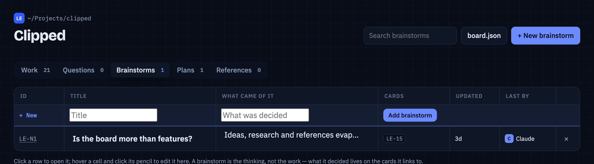
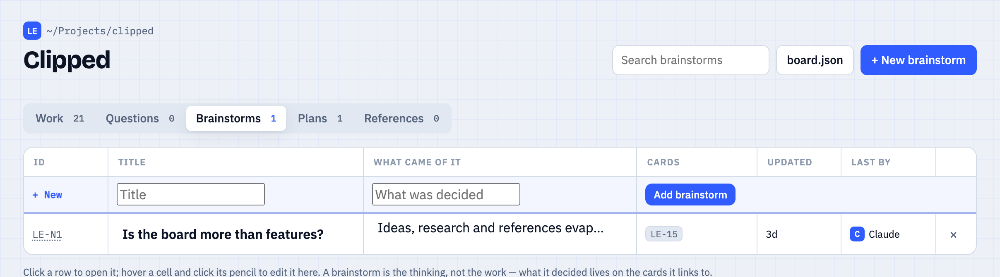

Plugin for Claude Code/MIT/runs locally
What did you and Claude decide last week?
A lot happens in a project while you're busy building it: features left halfway, decisions, "let's come back to this". It all lives in the chat, and a week later it's buried under endless scrolling with no context. Clipped writes it down as you go, on a small board per project that Claude keeps up to date, so you don't have to.
- 1
/plugin marketplace add avivalushai/clipped - 2
/plugin install clipped@clipped - 3Restart Claude Code, open a project and start working.
Type them inside Claude Code, not in your shell. Needs Node 20 or newer.
- or
Install the Clipped plugin from github.com/avivalushai/clipped
Say that instead and Claude runs both commands for you — the easy route in the desktop app. Step-by-step guide
~/code/nimbus-crm ❯ claude ⎿ SessionStart hook · clipped Clipped board: Nimbus CRM (CRM) — 1 active, 2 parked Parked: CRM-3 Import contacts from CSV (1/3) stopped: mapping done, merge not written (idle 16d) CRM-7 Email sync drops long threads (0/2) stopped: Gmail pagination, no retry yet (idle 9d) Active: CRM-8 Drag a deal between pipeline stages (2/4) next: keep the new order after a reload › the csv import thing — let's finish it ● Read(src/import/mapping.ts) ● Update(src/import/DedupeStep.tsx) Board: CRM-3 Import contacts from CSV → in progress · 2/3 steps ›
.board/board.jsonSound familiar?
Where did that go?
You open a project after two weeks. What was half done?
With ClippedEvery parked card has a note saying where you stopped and what's next.
Why did you pick that approach? It's 400 messages up, in a chat you closed.
With ClippedDecisions, brainstorms and plans get their own tabs, linked to the work they led to.
A new session starts and Claude remembers nothing about yesterday.
With ClippedEvery session opens with a short brief: what's in progress, parked, and waiting for you.
How it works
You build. Claude keeps the board.
-
You work as usual
Talk to Claude the way you already do. There's nothing new to learn and no board to fill in.
skill · rules Claude follows -
Claude writes it down
It opens a card when real work starts, ticks off steps, and parks it with a note when you stop. If it forgets, it gets a nudge at the end of the turn.
PostToolUse + Stop hooks -
The next session picks up
Before you type anything, Claude has a short brief of what's in progress, parked and waiting for you.
SessionStart hook
The board
One board per project, kept by Claude
Type board ui and it opens in your browser. It updates live while Claude works.


Open a card to see the whole piece of work
- Status
- Idea, In progress, Parked, Review or Done. Claude moves the card along as it works. Done waits for you.
- Next step
- What comes next. When a card is parked, this is where you stopped.
- Steps
- A checklist Claude ticks off as it goes. The progress bar is counted from it.
- Continue with Claude
- A ready prompt with where you stopped, the remaining steps and the files involved. Paste it into a new session and carry on.
- Files and activity
- Further down: every file edited for this card, and a log of every change with who made it.
Five tabs, so nothing lives only in the chat


/clipped:plan turns it into cards that point back to it.Switch between Table, Board and Timeline views. The sidebar lists every project on your machine that has a board.
What it is
What it does, and what it doesn't
I'd rather you know the limits before you install it.
It does
- Keeps the board without being askedClaude opens a card when real work starts, adds steps, and moves the card along as the work goes.
- Remembers where you stoppedParking a card needs a note saying where you stopped, so picking it up weeks later is cheap.
- Briefs Claude at the start of every sessionClaude already knows what's open, parked and waiting for review before you type anything.
- Shows every project in one place
board uiopens a local page listing every repo that has a board, and it updates live. - Keeps notes you'd lose in the chatBrainstorms, plans and references get their own tabs next to the cards.
It doesn't
- Close cards on a guessWhen Claude isn't sure, a card goes to Review. It only moves to Done when you say so, or when the work is merged or deployed.
- Touch your gitNo commits, no pushes, no branches. It writes one file:
.board/board.json. - Send your work anywhereNo account, no cloud copy. The board is a file in your repo. Details below.
- Leave boards everywhereA project gets a board the first time something in it is worth keeping. Your home folder and hidden folders never get one.
- Work for teamsIt's for one person on one machine. There's no sharing, no sync and no assignees.
Under the hood
What runs on your machine
A plugin can run code at points in a Claude Code session. Clipped hooks into three of them, and each one is a short script you can read.
| Hook | What happens |
|---|---|
| SessionStarta session starts | Reads the board and adds a short summary to Claude's context. This costs tokens: a few hundred for a small board, about 750 for this repo's 19 cards. |
| PostToolUseafter Claude edits a file | Attaches the file path to the active card, but only when the file plausibly belongs there. No output and no extra tokens. |
| StopClaude finishes a turn | If code changed but the board didn't, Claude is asked once to update it or say why not. This adds one short step to that turn at most, and never loops. |
| board uionly when you type it | Starts a local server on localhost:4747 for the board page. |
There's also a skill: the written rules Claude follows about when to open, update, park or close a card. Read the skill and the hooks.
Privacy
What leaves your machine
| File | What's in it |
|---|---|
.board/board.json | The cards and notes for that project. It lives in your repo, so you choose whether to commit it or add it to .gitignore. |
~/.clipped/ | The list of folders that have a board, so board ui can show them all, and your settings. |
To be exact: the code already contains usage counting (event names like feature_added, plus
numbers). It's inactive because there's no analytics project behind it. If I switch it on in a later
version, the release notes and the first run will say so. It will never include titles, notes, file paths
or project names, and board telemetry off stops it for good.
Honest status
Where it's still rough
It's early. I use it every day on three projects, and this is what still goes wrong.
- Sometimes it files work on the wrong card.Claude can attach unrelated work to whichever card is open. The rules are better now but not perfect.
- Sometimes it forgets.Mostly after small fixes. The end-of-turn nudge catches most cases.
- It has opinions about what counts as a card.A card is work with a next step, so one-line fixes stay off the board. That's deliberate, but you may disagree.
- It only runs on macOS so far.It should work on Linux. Windows is untested.
Questions
Things friends asked me
Does it cost tokens?
A little. The brief at the start of a session is a few hundred tokens for a small board, about 750 for this one. The end-of-turn nudge adds one short step only when the board fell behind.
Does it matter what language or stack I use?
No. The board tracks the work, not the code, so it works in any project Claude Code works in.
Can I edit the board myself?
Yes. Add, move or rewrite cards in the board page, or just tell Claude. Both write through the same code, so nothing gets out of sync.
What if Claude puts something on the wrong card?
Tell it, or fix it in the board page. Files can be detached from a card with board update --unfile. The rules get tighter every time I catch one of these.
Should I commit .board/board.json?
Your call. It's plain JSON. Commit it to keep the history with the code, or add it to .gitignore to keep it to yourself.
Does it need an internet connection?
No. The board, the page and the commands all run on your machine.
Try it
Two ways to install
You need Claude Code and Node 20 or newer. Both do exactly the same thing. First time with plugins? The install guide walks through every screen, and what to do when something doesn't show up.
Ask for it
- 1
Install the Clipped plugin from github.com/avivalushai/clipped - 2Approve the two commands Claude runs.
- 3Restart Claude Code, open a project and work as usual.
Works wherever Claude Code runs — the desktop app, a terminal, your editor.
Type it yourself
- 1
/plugin marketplace add avivalushai/clipped - 2
/plugin install clipped@clipped - 3Restart Claude Code, open a project and work as usual.
Inside Claude Code in a terminal or editor, not in your shell — the first line says where to look, the second installs from it. The desktop app has its own plugin menu: see the guide. From a shell, one line does both: claude plugin marketplace add avivalushai/clipped && claude plugin install clipped@clipped
Your first board
- 1
Set up a board for this project from my recent commits and open branches
Optional. Skip it and the board fills as you work; say it and it starts from what you already did.
Uninstall
- 1
/plugin uninstall clipped@clipped - 2Optional: delete
.board/in your projects and~/.clipped/.
Nothing else is left behind.
/clipped:board- Open the board, or show where things stand
/clipped:park- Stop for now, with a note on where you stopped
/clipped:done- Mark a card finished
/clipped:ask- Record a question that needs finding out
/clipped:plan- Turn a plan or spec document into cards
You don't need any of these commands. Talking normally is enough.